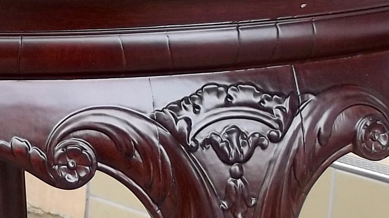

So pflegen Sie lasiertes Holz

Durch die Versiegelung ist lasiertes Holz etwas strapazierfähiger als gewachstes Holz. Auch hierbei darf nicht ohne weiteres mit einem feuchten Tuch gewischt werden. Da durch eine Lasur die Oberfläche nicht vollständig geschlossen ist, sondern immer Poren offen sind kann das Wasser in das Holz eindringen. Durch das Wasser quillt das Holz auf und es können Risse entstehen oder das Furnier löst sich im schlimmsten Fall ab. Auch hier ist ein regelmäßiges trockenes Abstauben die beste Reinigungsmethode